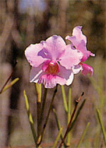

|
|
第２６ 美しいウリンガン教会
ある日、近く二十師団と五十師団の精鋭部隊が、後方基地のハンサ湾に上陸して来る、という情報が流れてきた。それが本当になって、
軍命令が出され、『山口少尉は二号機による無線一個分隊を編成し、自ら指揮してハンサに向かい、同地に布陣している第十八軍戦闘指令
所の指示に従うべし』と、いう命令を受けマダンから大発に乗船して、ハンサに向かった。昭和１８年３月×日、午前１時頃ハンサに到着
した。ハンサとラバウルとの無線連絡は完璧に終わった。上陸作戦は大成功に終わり、朝部隊（二十師団）は上陸が終わると、そのまま、
マダンに向かって前進していった。
私も再び、マダンに帰還することになったので、ハンサ軍通信所を高松友一郎伍長（無線第四分隊長）と交代し、任務はそのまま続行させ
私はマダンに陸路引き返した。
当番兵、大島上等兵をつれて、第十八軍作戦参謀田中少佐殿にお供して、マダンに行くことになった。マダンに向かう途中にウリンガン
という部落があった。入り江に面した所に、とんがった塔を持つ美しい教会があった。教会の後ろには、小高い丘があり、斜面には若草が
生えていて、その様が奈良の若草山にとてもよく似ていて懐かしく思えた。教会の前に広がる風景がまた、誠にのどかな港湾風景でした。

ウリンガン守備隊で作った便所を借りた。トイレの正面の壁に張り紙がしてあって、
『朝顔の露をもらすなしずくの一滴』
と、書いてあった。ここの守備隊長は奥ゆかしい軍人だなあと、感心した。守備隊長は、田中参謀と私を教会に案内した。尼さんたち
は私どもに、ニッコリ笑って会釈した。素晴らしいこの笑顔は、私にさわやかな印象を残した。 この美しい教会は、戦前にドイツ人が作
ったという。そこには男女の牧師とか尼さんが沢山生活していた。
当時の私にとっては、こんな未開の地に、よくも、文化の高いヨーロッパの地から移住してきたものだ。彼等の心情が理解できなかった。
そんな訳で、遠慮しながらシスターに、
『どうして？こんな秘境のニユーギニアに来たのか』と尋ねてみた。
彼女の答えがふるっていた。彼氏に振られたから来た、という返答でした。彼女は失恋したからこの秘境のニユーギニアに来たと言う。
男の牧師さんにも、同じ質問をしてみた。彼女の返事と同じ事をいう。私は心の中で、なあんだ！みんな失恋した男女ばかりではないか？と思った。
|